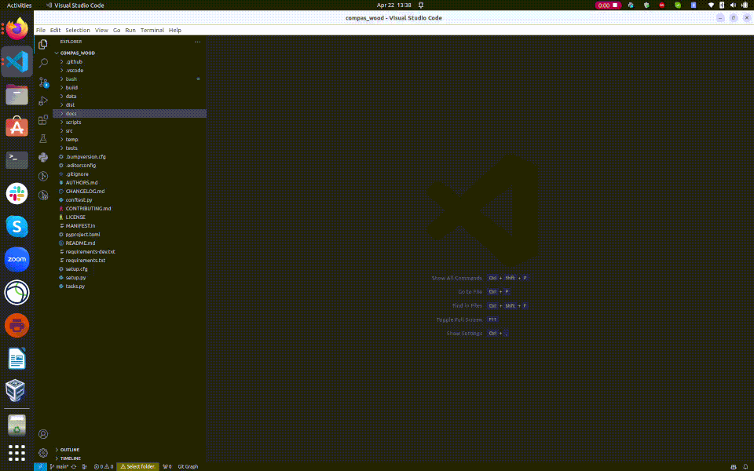

Conda
Create environment
conda create -n compas_wood_3_9_10 python=3.9.10 compas
conda activate compas_wood_3_9_10
Clone and install compas_wood
git clone https://github.com/petrasvestartas/compas_wood.git
cd compas_wood
pip install -r requirements.txt
pip install -e .
Display via compas_viewer
git clone https://github.com/compas-dev/compas_viewer.git
cd compas_viewer
conda activate compas_wood_3_9_10
pip install -e .
Visual Studio Code
Launch
VSCodeand select thecompas_wood_3_9_10Python environment usingCTRL+SHIFT+P.Open a new terminal via
Terminal -> New Terminal.Navigate to the
docs/examplesfolder and execute any.pyexample file by right-clicking and selectingRun Python File in Terminal.

Notes
If you are new to Anaconda World, install these tools first: